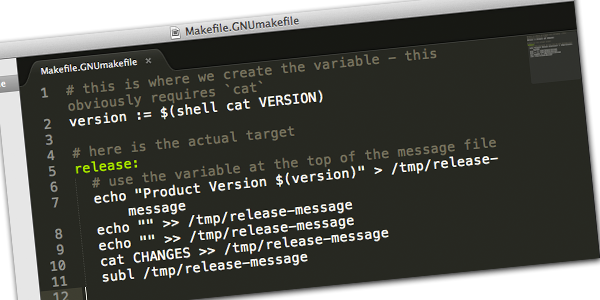

Posted on 11/10/2012. By Pete Otaqui.
I recently wanted to get the contents of a VERSION file to use in a Makefile make target.
It so happens that I only care about running this on operating systems which have sh / bash, so it’s fairly straightforward with some command line magic, combined with the right Makefile syntax.
You can set variables in gnu make outside of make targets, which makes them easy to share around. Here’s a simplification of “release” target. You can see that I’m creating a release message, which I output to a temporary file, then opening it in Sublime Text.
# this is where we create the variable - this obviously requires `cat` version := $(shell cat VERSION) # here is the actual target release: # use the variable at the top of the message file echo "Product Version $(version)" > /tmp/release-message echo "" >> /tmp/release-message echo "" >> /tmp/release-message cat CHANGES >> /tmp/release-message subl /tmp/release-message